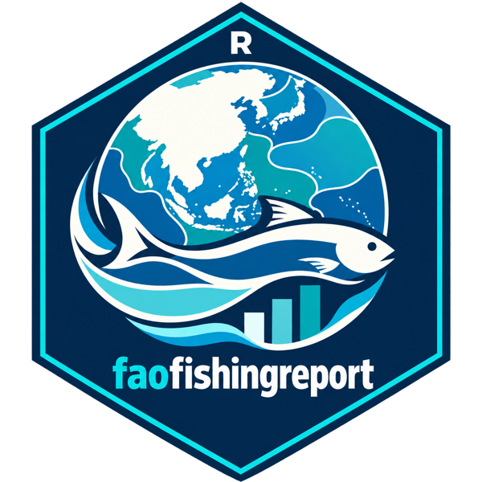

download_sst_data(): 下载海表温度数据产品
Source:vignettes/articles/zh/reference/download_sst_data.Rmd
download_sst_data.Rmd英文原页：download_sst_data()
说明
本函数逐年下载fao_sst_products()所列的某一种海表温度（SST）数据产品，并计算每个FAO主要海洋渔区的逐年SST（方法见fao_area_sst()）。之后即可按名称使用该产品，例如fao_area_sst(sst = "hadisst1")、mean_temperature_catch(..., sst = "hadisst1")或fao_settings(sst = "hadisst1")。文件保存在data_dir的sst文件夹中，files.csv记录了每个文件的下载地址和下载时间；已下载的年份会跳过，所以下载中断后，重新运行本函数即可接着下载。对于ERSST
v5（其数据表已随包提供），本函数用于补充此后新发布的年份：下载的年份替换包内自带数据表中的相同年份，其余年份仍使用包内自带的数据。
English
This function downloads one of the sea surface temperature (SST)
products listed by fao_sst_products(), one year at a time,
and computes the yearly SST of each FAO major marine fishing area (see
fao_area_sst() for the method). The product can then be
used by its name, e.g. fao_area_sst(sst = "hadisst1"),
mean_temperature_catch(..., sst = "hadisst1") or
fao_settings(sst = "hadisst1"). Files are kept in the
sst folder of data_dir, with
files.csv recording where and when each was downloaded;
years already downloaded are skipped, so an interrupted download can be
resumed by running the function again. For ERSST v5, whose table is
built into the package, the function adds the years published since.
用法
download_sst_data(
product = "ersst5",
years = NULL,
data_dir = fao_data_dir(),
overwrite = FALSE,
quiet = FALSE
)参数
product-
数据产品：“ersst5”、“hadisst1”、“cobe2”或”oisst21”；见
fao_sst_products()。English
The product: “ersst5”, “hadisst1”, “cobe2” or “oisst21”; seefao_sst_products(). years-
要下载的年份。默认为NULL：从1950年（OISST
v2.1为1982年）到最近一个完整年份。
English
The years to download. Default is NULL: from 1950 (1982 for OISST v2.1) to the last complete year. data_dir-
下载数据的保存目录。默认为
fao_data_dir()。English
The directory where downloaded data is stored. Default isfao_data_dir(). overwrite-
逻辑值。为TRUE时，已下载的年份会重新下载。默认为FALSE。
English
A logical value. If TRUE, years already downloaded are downloaded again. Default is FALSE. quiet-
逻辑值。为TRUE时不显示进度信息。默认为FALSE。
English
A logical value. If TRUE, progress messages are not printed. Default is FALSE.
返回值
以不可见方式返回渔区数据表（与fao_area_sst()返回的相同）。
English
Invisibly, the area table (as returned by
fao_area_sst()).
详细说明
不使用本函数，也可以使用其他来源的SST数据，只需给出NetCDF文件的路径（见fao_area_sst()）。读取这些文件需要ncdf4包。
English
SST data from other sources can be used without this function, by
giving the path of the NetCDF files (see fao_area_sst()).
Reading the files needs the ncdf4 package.
参考文献
Hirahara, S., Ishii, M. and Fukuda, Y. (2014). Centennial-scale sea surface temperature analysis and its uncertainty. Journal of Climate 27: 57-75. doi:10.1175/JCLI-D-12-00837.1
Huang, B., Thorne, P.W., Banzon, V.F., Boyer, T., Chepurin, G., Lawrimore, J.H., Menne, M.J., Smith, T.M., Vose, R.S. and Zhang, H.-M. (2017). Extended Reconstructed Sea Surface Temperature, Version 5 (ERSSTv5): Upgrades, Validations, and Intercomparisons. Journal of Climate 30: 8179-8205. doi:10.1175/JCLI-D-16-0836.1
Huang, B., Liu, C., Banzon, V., Freeman, E., Graham, G., Hankins, B., Smith, T. and Zhang, H.-M. (2021). Improvements of the Daily Optimum Interpolation Sea Surface Temperature (DOISST) Version 2.1. Journal of Climate 34: 2923-2939. doi:10.1175/JCLI-D-20-0166.1
Rayner, N.A., Parker, D.E., Horton, E.B., Folland, C.K., Alexander, L.V., Rowell, D.P., Kent, E.C. and Kaplan, A. (2003). Global analyses of sea surface temperature, sea ice, and night marine air temperature since the late nineteenth century. Journal of Geophysical Research 108 (D14): 4407. doi:10.1029/2002JD002670
HadISST1 dataset description, with the warning of 10 March 2016 and a link to the analysis by D. Chelton and C. Risien (https://ir.library.oregonstate.edu/xmlui/handle/1957/58385): https://coastwatch.pfeg.noaa.gov/erddap/info/erdHadISST/index.html
Web pages of the products: ERSST v5 https://www.ncei.noaa.gov/products/extended-reconstructed-sst; HadISST1 https://www.metoffice.gov.uk/hadobs/hadisst/; COBE-SST2 https://psl.noaa.gov/data/gridded/data.cobe2.html; OISST v2.1 https://www.ncei.noaa.gov/products/optimum-interpolation-sst
示例
fao_sst_products()
download_sst_data("hadisst1") # about 240 MB
fao_area_sst("34", sst = "hadisst1")